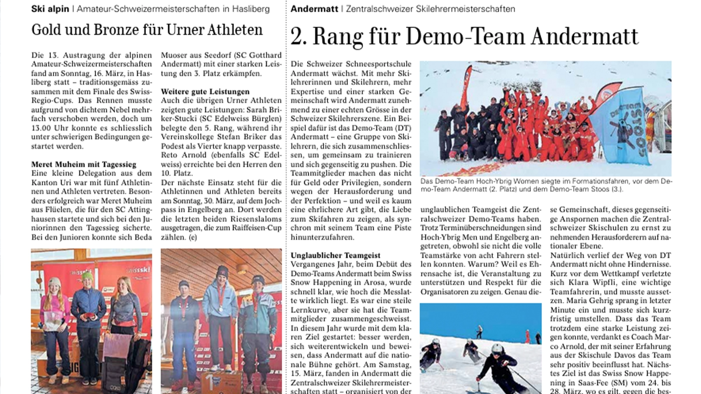
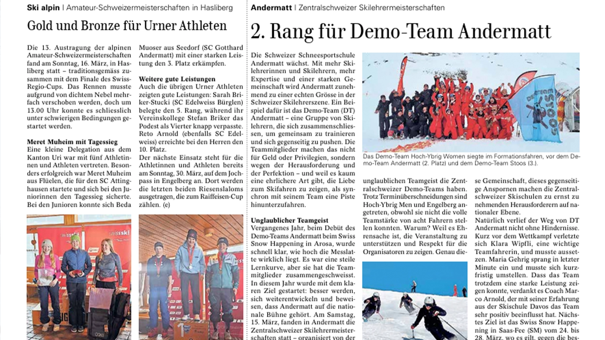

Media Statement • No.003
ZSM Andermatt
17.03.2025 • Andermatt

 

ENG
A STEP FORWARD FOR ANDERMATT & THE CENTRAL SWISS SKI SCHOOLS AT THE ZSM IN ANDERMATT
The Swiss Snowsports School Andermatt is growing – and fast. With more instructors, more expertise, and a stronger community, Andermatt is becoming a true force in the Swiss ski instructor scene. A perfect example of this is the Demo Team Andermatt – a group of instructors who train together, push each other, and share all the highs and lows of the sport. They don’t do this for money or privilege, but for the challenge, for the pursuit of perfection – and because there is hardly a more honest way to show love for skiing than carving down a slope in sync with a team. At their debut at the Swiss Snow Happening in Arosa last year, the team quickly realized just how high the bar is set. It was a steep learning curve, but one that welded them together. They entered this season with a clear goal: to improve, to grow, and to prove that Andermatt belongs on the national stage.
A Breakthrough at the Central Swiss Championships
On Saturday (15 March 2025), the Central Swiss Ski Instructor Championships were held in Andermatt – organized by the Swiss Snowsports School Andermatt – and the Demo Team achieved its first major milestone: 2nd place in formation skiing. A result to be proud of, but more importantly, proof of the incredible team spirit among the Central Swiss demo teams. Despite scheduling conflicts, Hoch-Ybrig Men and Engelberg still competed, even though they could not field the full team of eight riders. Why? Because for them it is a matter of honor to support the event and show respect for the organizers. This sense of community and mutual encouragement is exactly what makes the Central Swiss ski schools serious challengers on the national stage. Of course, the path was not without obstacles. Shortly before the competition, Klara Wipfli, one of the key riders, was injured and had to sit out. Maria Gehrig stepped in at the last minute and had to adapt quickly. That the team was still able to deliver a strong performance is thanks in large part to their coach Marco “Nöldeli” Arnold, whose experience from the Davos Ski School has had a very positive influence on the group.
Next Goal: Swiss Snow Happening in Saas Fee
With Klara back on her skis, the focus now turns to the Swiss Championships in Saas Fee (24 – 28 March), where the Demo Team Andermatt will compete against the best demo teams in Switzerland (and indeed, the world). Bern, Valais, and Grisons remain the favorites, but one thing is certain: the Central Swiss ski schools are closing the gap and will travel to Saas Fee as a united delegation.
Thanks to the Sponsors!
None of this would be possible without the support of: Alp-Hittä Andermatt, Christen Automobile, Swix, Toko, R. Wick AG, KOWAP AG, FN Niederhauser, Russi Heizung Sanitär AG Andermatt, and Imholz Sport Andermatt. Their contribution gives the team the opportunity to train, improve, and represent Andermatt at the highest level.
DEU
EIN SCHRITT NACH VORNE FÜR ANDERMATT & DIE ZENTRALSCHWEIZER SKISCHULEN BEIM ZSM IN ANDERMATT
Die Schweizer Schneesportschule Andermatt wächst – und das schnell. Mit mehr Skilehrerinnen und Skilehrern, mehr Expertise und einer starken Gemeinschaft entwickelt sich Andermatt zunehmend zu einer festen Grösse in der Schweizer Skilehrerszene. Ein perfektes Beispiel dafür ist das Demo Team Andermatt – eine Gruppe von Skilehrerinnen und Skilehrern, die gemeinsam trainieren, sich gegenseitig pushen und alle Höhen und Tiefen dieses Sports teilen. Sie machen das nicht für Geld oder Privilegien, sondern für die Herausforderung, für die Perfektion – und weil es kaum eine ehrlichere Art gibt, die Liebe zum Skifahren zu zeigen, als synchron mit einem Team eine Piste hinunterzufahren. Bei ihrem Debüt am Swiss Snow Happening in Arosa im vergangenen Jahr wurde schnell klar, wie hoch die Messlatte liegt. Es war eine steile Lernkurve, die das Team aber zusammengeschweisst hat. In diese Saison starteten sie mit einem klaren Ziel: besser werden, sich weiterentwickeln und beweisen, dass Andermatt auf die nationale Bühne gehört.
Ein Durchbruch bei den Zentralschweizer Meisterschaften
Am Samstag (15. März 2025) fanden in Andermatt die Zentralschweizer Skilehrermeisterschaften statt – organisiert von der Schweizer Schneesportschule Andermatt – und das Demo Team Andermatt erreichte seinen ersten grossen Erfolg: den 2. Platz im Formationsfahren. Ein Ergebnis, auf das das Team stolz sein darf. Noch wichtiger ist jedoch, dass es den unglaublichen Teamgeist der Zentralschweizer Demoteams widerspiegelt. Trotz Terminüberschneidungen traten Hoch-Ybrig Men und Engelberg an, auch wenn sie nicht die volle Teamstärke von acht Fahrern stellen konnten. Warum? Weil es für sie Ehrensache ist, die Veranstaltung zu unterstützen und Respekt für die Organisatoren zu zeigen. Genau dieser Zusammenhalt und das gegenseitige Anspornen machen die Zentralschweizer Skischulen zu ernstzunehmenden Herausforderern auf nationaler Ebene. Natürlich verlief der Weg nicht ohne Hindernisse. Kurz vor dem Wettkampf verletzte sich Klara Wipfli, eine der wichtigsten Fahrerinnen, und musste pausieren. Maria Gehrig sprang in letzter Minute ein und musste sich kurzfristig umstellen. Dass das Team dennoch eine starke Leistung zeigen konnte, ist zu einem grossen Teil Coach Marco «Nöldeli» Arnold zu verdanken, dessen Erfahrung aus der Skischule Davos das Team sehr positiv beeinflusst hat.
Nächstes Ziel: Swiss Snow Happening in Saas Fee
Mit Klara zurück auf den Skiern richtet sich der Blick nun auf die Schweizer Meisterschaften in Saas Fee (24. – 28. März), wo das Demo Team Andermatt gegen die besten Demoteams der Schweiz (und ehrlich gesagt der Welt) antreten wird. Bern, Wallis und Graubünden bleiben die Favoriten, doch eines ist sicher: Die Zentralschweizer Skischulen rücken immer näher und reisen als geschlossene Delegation nach Saas Fee.
Danke an die Sponsoren!
Ohne die Unterstützung folgender Partner wäre all dies nicht möglich: Alp-Hittä Andermatt, Christen Automobile, Swix, Toko, R. Wick AG, KOWAP AG, FN Niederhauser, Russi Heizung Sanitär AG Andermatt sowie Imholz Sport Andermatt. Ihr Engagement ermöglicht es dem Team, zu trainieren, sich zu verbessern und Andermatt auf höchstem Niveau zu vertreten.